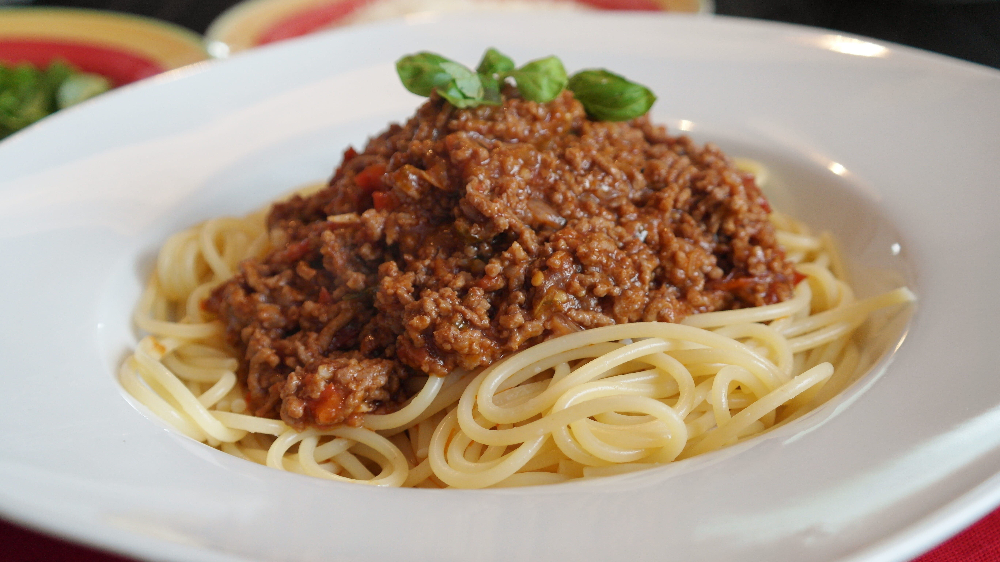

Bolognese

Description
A warm embrace from Italy, just like momma used to make.
A savory spaghetti dish, topped with ground beef and tomato sauce and garnished with basil.
It's certain to make you want to visit the Italian countryside.
Ingredients:
- ground beef
- olive oil
- diced onion and garlic
- spaghetti
- a can of diced tomatoes
- salt and pepper
- sugar
- spices to your liking
- fresh basil leaf
- Pour the olive oil, onion and garlic on a frying pan
- After they cook for a bit, add the beef
- When the beef is mostly cooked, add the can of tomatoes and the spices
- Add a bit of water and let it simmer on low heat
- In another pan, add water and salt and bring it to a boil
- Whenever it's boiling, add the pasta and let it cook until al dente
- Serve your delicious bolognese pasta and garnish with basil or grated cheese
Homepage